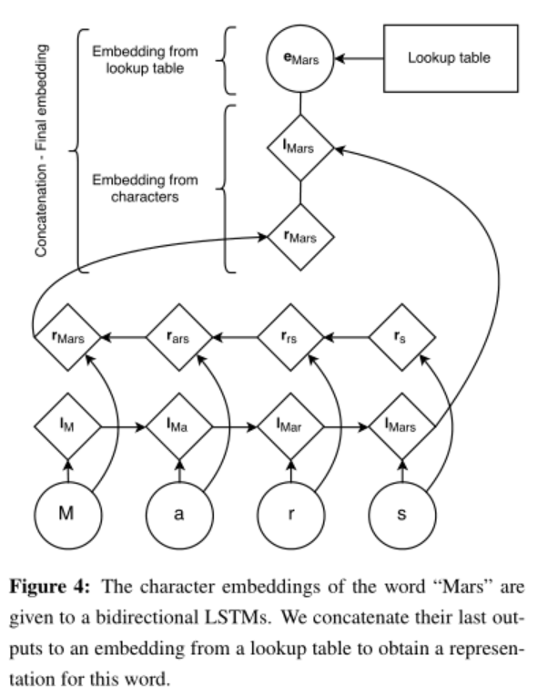

1. Input Word Embeddings
The input layers to both of our models are vector representations of individual words. Learning independent representations for word types from the limited NER training data is a difficult problem: there are simply too many parameters to reliably estimate. Since many languages have orthographic or morphological evidence that something is a name (or not a name), we want representations that are sensitive to the spelling of words. We therefore use a model that constructs representations of words from representations of the characters they are composed of (4.1).
[success]
先验知识1：可以从一个单词的组成推断它是不是一个name entity。
因此使用字符级双向LSTM来体现单词组成的特点。
Our second intuition is that names, which may individually be quite varied, appear in regular contexts in large corpora. Therefore we use embeddings learned from a large corpus that are sensitive to word order (4.2).
[success]
先验知识2：可以从一个单词在句子上的位置推断它是不是一个name entity。
因此使用对单词顺序敏感的语料库训练embedding.
Finally, to prevent the models from depending on one representation or the other too strongly, we use dropout training and find this is crucial for good generalization performance (4.3).
[success]
dropout用于平衡字符级表示与单词级表示的重要性，对性能有很大提升。
1.1. Character-based models of words
An important distinction of our work from most previous approaches is that we learn character-level features while training instead of hand-engineering prefix and suffix information about words. Learning character-level embeddings has the advantage of learning representations specific to the task and do main at hand. They have been found useful for morphologically rich languages and to handle the out-of-vocabulary problem for tasks like part-of-speech tagging and language modeling (Ling et al., 2015b) or dependency parsing (Ballesteros et al., 2015).
[success] 字符级的embedding的优势
形态学rich的语言
处理out of vocabulary问题
dependency parsing
Figure 4 describes our architecture to generate a word embedding for a word from its characters. A character lookup table initialized at random contains an embedding for every character. The character embeddings corresponding to every character in a word are given in direct and reverse order to a forward and a backward LSTM. The embedding for a word derived from its characters is the concatenation of its forward and backward representations from the bidirectional LSTM. This character-level representation is then concatenated with a word-level representation from a word lookup-table. During testing, words that do not have an embedding in the lookup table are mapped to a UNK embedding.

[success] 字符级embedding也是用的双向LSTM，然后两边的结果拼到一起。区别是每个LSTM都是在一个单词结束时才输出。
再加上单词级的embedding，来自查表和UNK embedding
To train the UNK embedding, we replace singletons with the UNK embedding with a probability 0.5.
[warning] 这一句没看懂
In all our experiments, the hidden dimension of the forward and backward character LSTMs are 25 each, which results in our character-based representation of words being of dimension 50.
Recurrent models like RNNs and LSTMs are capable of encoding very long sequences, however, they have a representation biased towards their most recent inputs. As a result, we expect the final representation of the forward LSTM to be an accurate representation of the suffix of the word, and the final state of the backward LSTM to be a better representation of its prefix.
[success] 为什么用双向LSTM？
因为RNN/LSTM受最近的点影响特别大。双向分别用于识别单词的前缀和后缀。
Alternative approaches most notably like convolutional networks—have been proposed to learn representations of words from their characters (Zhang et al., 2015; Kim et al., 2015). However, convnets are designed to discover position-invariant features of their inputs. While this is appropriate for many problems, e.g., image recognition (a cat can appear anywhere in a picture), we argue that important information is position dependent (e.g., prefixes and suffixes encode different information than stems), making LSTMs an a priori better function class for modeling the relationship between words and their characters.
[success] 此处不适合用CNN，因为前缀和后缀的位置固定，不具有平移不变性。
1.2. Pretrained embeddings
As in Collobert et al. (2011), we use pretrained word embeddings to initialize our lookup table. We observe significant improvements using pretrained word embeddings over randomly initialized ones.
[success]
图4的单词级look-up table的初始化，使用pretrained代替随机初始化，性能有明显提升。
Embeddings are pretrained using skip-n-gram (Ling et al., 2015a), a variation of word2vec (Mikolov et al., 2013a) that accounts for word order. These embeddings are fine-tuned during training.
[success]
look-up-table = skip-n-gram + fine-tuned
Word embeddings for Spanish, Dutch, German and English are trained using the Spanish Gigaword version 3, the Leipzig corpora collection, the German monolingual training data from the 2010 Machine Translation Workshop and the English Giga word version 4 (with the LA Times and NY Times portions removed) respectively. 2 We use an embedding dimension of 100 for English, 64 for other languages, a minimum word frequency cutoff of 4, and a window size of 8.
[success] 训练word embedding用的语料库
1.3. 4.3 Dropout training
Initial experiments showed that character-level embeddings did not improve our overall performance when used in conjunction with pretrained word representations. To encourage the model to depend on both representations, we use dropout training (Hinton et al., 2012), applying a dropout mask to the final embedding layer just before the input to the bidirectional LSTM in Figure 1. We observe a significant improvement in our model’s performance after using dropout (see table 5).
[success]
字符级表示 + 单词级表示 + pretrained = 效果一般
字符级表示 + 单词级表示 + pretrained + dropout = 效果好